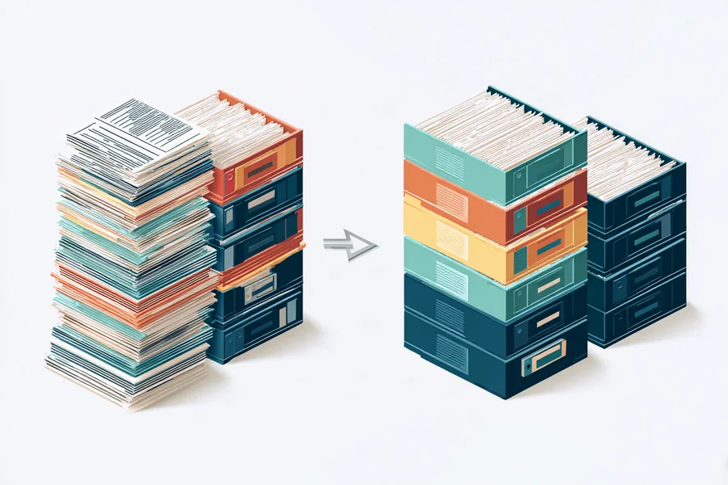
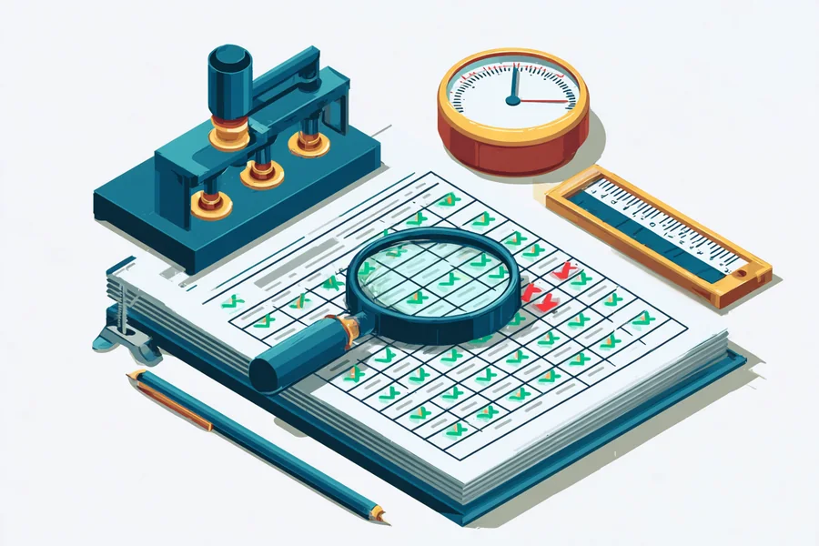

AI Consulting
AIで日々の事務を減らし、
減らしたあとも回り続ける形にする。
毎日の事務をAIで減らし、手が回らなかった文書をAIで作ります。ただし、どちらも作って終わりにはしません。AIは止まるより先に、動いているように見えたまま成果を出さなくなります。本当に終わったかを確かめるところまでを、仕事の範囲としています。
Why
なぜ「確かめる」までを引き受けるのか
Introduction
77秒でご説明します
- AIに任せると、実際のところ何が起きるのか
- 当社が起こした2件の失敗（領収書の2か月・書式の53日間）
- 減らす・作る・確かめる、という仕事の形
字幕つき。再生ボタンを押すまで音は出ません。この動画の作り方と検査の結果は作る仕事の見本に書いています。
当社は自分の会社の事務をAIに任せて半年になります。いちばん困ったのは、AIが止まることではありませんでした。「できました」と報告されたのに、成果物が出ていなかったことです。
領収書の整理を任せて、2か月後に成果物が1枚もないことに気づきました。毎日公開していた記事は、書式が崩れたまま53日間公開されていました。どちらの場合も、AIは毎回「完了しました」と返していました。この2か月に何が起きたかは、事例のページに書きました。
AIを実務に入れた人が最初にぶつかる壁は、使い方ではなく「信用できるか分からない」ことです。この痛みを解く方法は、AIを賢くすることではなく、本当に終わったかを確かめる手順を、仕事の一部として持つことでした。
だから当社は、事務を減らす設計と、減らしたあとの検査を、1つの仕事として引き受けます。経緯は note の記録 に毎日書いています。
Triage
業務を3つに振り分ける
送る前・配る前に人の目に入る仕事。問い合わせの返信、議事録、求人票、ホームページのお知らせ。検査は要りません。
請求書の作成、見積書、入金の消込。間違いが入金時や決算まで目に入らない仕事です。ここに検査をつけます。当社の本命はここです。
③として「任せない」と先に決める仕事も必ず作ります。全部をAIに寄せることはしません。
向き不向きは難易度ではなく「間違いに気づくまでの時間」で決まります。棚卸しでは現在の業務を全部並べ、この3つに振り分けます。AIに任せられる仕事を増やすのではなく、検査をつければ任せられる仕事を、検査つきで任せるのが当社の仕事です。

AIに任せられる
間違えてもすぐ分かる業務。議事録の下書き、問い合わせの一次返信、資料の要約。
気づくまで：数分検査をつければ任せられる
気づくのが遅い業務。請求書の作成、経費の仕分け、在庫の突合。ここが仕事の中心です。
気づくまで：数日〜月末人がやるべき
気づけない、または気づいたときには遅い業務。契約の判断、人事、取引先との交渉。
気づくまで：手遅れOffer
提供するもの
業務の棚卸しとAI化プラン 50,000円（税別）
90分のヒアリングで、いまの業務を全部並べます（訪問・オンラインどちらでも、料金は変わりません）。そのうえで3つに振り分け、レポートにまとめて、聞き取りの日から2週間以内に納品します。
レポートにはすぐ試せる1業務ぶんの完成手順を必ず入れます。お手元のAIに投げる文面と、結果の確かめ方を、そのまま使える形で書きます。持ち帰った日から試せます。
この手順は「当社がいなくても、貴社のAIで、貴社だけで回せる形」にしてあります。当社が毎月うかがって代わりに動かすためのものではありません。読んだ方が、ご自身のパソコンで、ご自身で確かめられるところまで書きます。完成形にするのは1業務ぶんで、残りは着手の順番だけをお示しします（第6節）。
全額返金保証。レポートを読んで「使えない」と思われたら、お支払いの日から14日以内のお申し出で理由を問わず全額をお返しします（納品の日から2か月を上限。同一のお客様につき1回限り）。お読みになって、お試しになってから決めていただけます。
レポートの見本を公開しています。架空の会社を題材にした7節そのままの見本です。
お渡しするもの
- レポート（PDF）。巻末に当社の作業の記録を付けます。工程ごとの見込みの時間と、実際にかかった時間の両方を載せます
- 処理ログのシート（Excel）。検査を回すための表です。紙では回せないので、別ファイルでお渡しします
- AIに貼る文面（テキスト）。PDFからコピーすると改行が崩れることがあるため、別ファイルにしています
- ご希望があれば紙でもお持ちします（決裁の方と、実際に使われる方の2部）
納品のあと、ご希望があれば30分ほどお時間をいただいて、第4節の手順を一度ご一緒に動かします。追加の費用はいただきません。
この5万円で、貴社に何が残るか
- 漏れのない業務の一覧。社内の方には作れません。毎日やっていることは、書き出す対象として見えなくなるためです。他人が90分聞いて並べるから出てきます。
- 読んだその日に試せる手順が1つ。お手元のAIに貼る文面と、結果の確かめ方が、そのまま使える形で書いてあります。当社がいなくても、貴社だけで回せる形です。1回でも通れば、この5万円はそこで回収されます。
- 減った時間が、どの費用に出るかの見取り図。「楽になります」では決裁できません。どの費用がいくら動きうるかと、動かすために何を決めるかを書きます（第7節）。
あわせて「AIに任せない」と判断した業務と、その理由も書きます。全部できますとは申しません。
当社が何にどれだけ時間を使ったかも、巻末に載せます。見込みと実測を並べて書きます。 確かめることを売っている会社である以上、自社の作業も確かめられる形でお出しします。
| 節 | 内容 | 枚数 |
|---|---|---|
| 1 | 現在の業務の一覧。漏れがないことに価値があります | 2 |
| 2 | 3つへの振り分け | 2 |
| 3 | 振り分けの理由。難易度ではなく気づくまでの時間で分けます | 1 |
| 4 | すぐ試せる1業務ぶんの完成手順。当社がいなくても貴社だけで回せる形で書きます | 3 |
| 5 | その業務の検査の設計。何をどう確かめれば「本当に終わった」と言えるか | 1 |
| 6 | 残りの業務の着手順と、その理由 | 1 |
| 7 | 減らした時間を、何に変えるか。どの費用がどう動くかの見取り図 | 1 |
| 巻末 | 当社の作業の記録。工程ごとの見込みと実測 | 1 |
顧問
棚卸しを通った方が、業務ごとに手順書と検査を作り、回し続ける段階です。階層は、打合せの回数ではなく扱う業務の数と部門の数で分けます。
| プラン | 範囲 | 打合せの上限 | 含まれるもの |
|---|---|---|---|
| ライト | 業務 1〜3種類 / 1部門 | Zoom 60分 × 月2回まで | 手順書と検査の設計、メール相談（無制限・返信は3営業日以内） |
| スタンダード | 業務 4〜10種類 / 2部門まで | Zoom 月3回まで。対面は四半期に1回 | 上記に加え、検査手順書の作成と更新、業務フローの設計 |
| プロ | 部門数の上限なし | Zoom 月4回まで。対面は月1回 | 上記に加え、複数部門の設計、月次レポート、検査つきの運用 |
打合せの回数は上限で、使わない月の繰り越しはありません。メール相談は全プランで無制限です。対面は滋賀県内で、県外は交通費の実費をいただきます。期間は6か月で、満了時に双方が更新を選びます。月額の仕組みは 料金 をご覧ください。
手順書と検査
手順書は、お手元のAIに実装させるための文書です。投げる文面、順序、確認する点を、そのまま使える形で書きます。Claude を前提に書き、ChatGPT や Gemini をお使いの場合は読み替えの注記を付けます。スプレッドシートやGASのような小さな自動化は、手順書ではなく「作る仕事」として当社が作ります。
検査は、AIが返した結果について、何をどう確かめれば「本当に終わった」と言えるかの手順です。合否を記録し、人が最終確認する位置を決めます。検査を通った件数だけを、成果として数えます。検査記録と処理ログと月次レポートの見本を公開しています。
Make
作る仕事。手が回らなかった文書を、AIで作って検査記録つきで納める
事務を減らす仕事とは別に、もう1つの仕事があります。人手が足りずに作れなかったマニュアルや資料、ホームページ、記事やSNSの投稿を、AIで作ることです。当社は自社の教材20冊、2,045頁をこの方法で作り、引用の原文照合4,055件と検証用スクリプト195本で確かめてきました。同じやり方を、貴社の文書に合わせて組み直します。
何を作るか
| 成果物 | 素材 | 検査の内容 |
|---|---|---|
| 業務マニュアル・手順書 | 担当者への聞き取り、既存のメモ、画面の記録 | 手順の抜け、用語のぶれ、実際の画面との食い違い |
| 社内ルール集 | 口頭で決まっているルール、過去の通達 | ルール同士の矛盾、例外の扱いの漏れ |
| 研修資料 | マニュアル、よくある失敗の記録 | マニュアルとの整合、章ごとの網羅 |
| FAQ・問い合わせ回答集 | 過去の問い合わせと回答 | 回答の根拠の実在、回答同士の矛盾 |
| 提案書・営業資料のひな型 | 過去の提案書、価格表、事例 | 数値の検算、価格表との一致 |
| 台帳の整備 | ばらばらの表、メール、紙の記録 | 件数の突合、重複と欠落の検出 |
| お知らせ・記事の下書き | 要点のメモ | 事実の出所、日付と数値の検算 |
| 小さな自動化（スプレッドシート、GAS、簡単なスクリプト） | 業務の手順、入力と出力の見本 | 見本データでの実行結果、想定外の入力での挙動 |
| ホームページの制作・作り直し | 会社案内、価格表、既存サイト、写真 | 全ページのリンク切れ、表示の崩れ、価格や連絡先の一致、特商法などの記載の有無 |
| ホームページの更新（お知らせ、記事の追加） | 要点のメモ、差し替える情報 | 事実の出所、日付と数値の検算、公開前の貴社の承認 |
| SNSの投稿文 | 記事、商品の情報、写真 | 表記の規制（景品表示法・薬機法など）に触れる語の検出、公開前の貴社の承認 |
| 動画の台本と字幕 | 伝えたい内容、社内の資料 | 出典の実在、数値の検算、尺の見積もり |
| チラシ・DMの文面と差し込み印刷 | 名簿、伝えたい内容 | 宛名と本文の突合、通数の一致、郵便の規格に収まるか |
| 調べてまとめる（法令・官公庁の資料、公開情報の名簿） | 調べたいこと、対象の範囲 | 原文にあたったか、出所URLと取得日の記録、利用条件の確認 |
どう作るか
作る係と確かめる係を分けます。生成は生成用の手順で行い、検査は別の検査手順と機械の照合で行い、何をどう確かめて何を直したかを検査記録に残します。最終の受入れは貴社です。
どう数えるか
成果物1本ごとに、人手で作った場合の時間を、当社が内訳つきで見積もって提案し、着手前に合意して固定します。貴社に過去の実績や外注の見積もりがあれば、それで補正します。料金は換算時間 × 時給 × 50%。数えるのは受け入れられた本数だけで、月次レポートには「換算」と明記します。単発の注文は1件あたり最低5万円で、顧問の中では月額の最低額だけが効きます。基準は換算時間の基準表にあります。
作らないもの
契約書、就業規則などの労務書類、登記や許認可の書類は作りません。それぞれ弁護士、社会保険労務士、司法書士、行政書士の業務です。必要な場合はご紹介します。
進め方
聞き取りと既存の資料。録音でも結構です。
1本ごとに、何を作るかと人手換算の時間を決めます。
生成用の手順で下書きを作ります。
検査手順と機械の照合。直した点を記録します。
何を確かめたかが分かる形でお渡しします。
受け入れた本数だけを数えます。
Monthly Report
月次レポートは、実測できるものだけを載せます

| 載せる（実測できる） | 載せない（推定しか出せない） |
|---|---|
| 今月AIが処理した件数 | 月ごとに推定し直した削減時間 |
| 作った検査の数 | 削減できた人件費の推定 |
| 検査が見つけた不整合の件数 | 生産性の向上率 |
| 人が最終確認した件数 | |
| 節約時間（合意した1件あたりの時間 × 件数。換算と明記） | |
| 受け入れられた成果物の本数と換算時間（換算と明記） |
「今月、検査が3件の不整合を見つけました」は、「20時間削減しました」より説得力があります。前者は事実で、後者は推定だからです。
顧問料の算定に使う節約時間は、着手前に合意した1件あたりの時間（見積もり）に、検査を通った件数（実測）を掛けたものです。見積もりの部分は月ごとに変えず、実測の部分は処理ログから数えます。レポートでは、この2つを分けて書きます。
Catalog
できること 64項目
下の64項目は、すべて当社がAIで対応します。 減らす32項目は、手順書と検査を当社が設計し、お手元のAIで回していただきます。作る32項目は、当社のAI（Claude）で作り、作る係と確かめる係を分けて検査記録つきで納めます。作る仕事は貴社にAIの契約がなくてもお受けできます。
減らす 毎日くり返す事務 32項目
振り分けの物差しは、難しさではなく「間違いに気づくまでの時間」です。気づくのが遅い仕事ほど、検査をつける値打ちがあります。
請求と入金
6発注と在庫
4人と時間
3現場の記録
5お客様対応
4社内の文書
3整える・調べる
7作る 成果物 32項目
右端は換算時間の目安です。時給2,000円なら「換算時間×1,000円」がおよその料金になります。空欄は型が決まっていないもので、着手前に内訳つきで見積もって合意します。
文書と資料
10ホームページと発信
8図・動画・印刷物
4小さな自動化
5調べてまとめる
52列目は、その仕事で当社が何を確かめるかです。作って終わりにしないことが当社の仕事の中身なので、検査の欄を空にしたものはありません。ここにない仕事もご相談ください。行わないことにあたらなければ、同じ形でお引き受けします。
Scope
条件つきで行うこと、行わないこと
スプレッドシート、GAS、簡単なスクリプトは「作る仕事」として当社が作り、作る係と確かめる係を分けて検査記録つきで納めます。基幹システムの開発や他社製品の改修は受けません。
候補と理由を示し、選ぶのは貴社です。ツール会社から紹介料を受け取りません。
記事やお知らせの作成、差し替え、投稿文の用意まで当社が行い、公開してよいかの判断は貴社が行います。貴社の承認なしに当社が公開することはありません。運用は毎月続く仕事なので、同時にお受けする社数に上限があります。
設計した業務を当社のAIで回し、検査して結果をお渡しすることはできます。請求書の送付や取引先への返信のように貴社の名で外へ出す行為と、最終の判断は貴社が行います。料金は減らす仕事と同じ式で、同時にお受けする社数に上限があります。
弁護士、社会保険労務士、司法書士、行政書士の業務にあたるため行いません。必要な場合はご紹介します。
Terms
契約の条件
- 契約の性質
- 準委任。成果の保証はしません。
- 期間
- 6か月。最低3か月。満了時に双方が更新を選びます。
- 解約
- 最低期間のあとは、1か月前の書面による通知で解約できます。
- 支払
- 月末締め・翌月末払い・銀行振込。振込手数料はお客様のご負担です。棚卸しは、納品と同時に請求書をお渡しします（前払いはありません）。
- 秘密保持
- 相互の秘密保持契約を結びます。棚卸しだけの場合も、簡易版を1枚交わします。
- 年商の確認
- 顧問料の上限を決めるため、契約時に損益計算書の売上高を確認します。設立1年目の会社は直近12か月の試算表で代えます。
- 事例の掲載
- 原則として掲載しません。掲載する場合は個別に書面で同意をいただきます。
- 再委託
- しません。
- 業務範囲外
- 大きなシステムの開発、貴社の名で外部へ送る行為、ツールの購入や契約の手続き、士業の業務（契約書・就業規則・登記・許認可の書類）。
契約の主な条項に要旨をまとめています。全文は無料相談のあとにお渡しします。
Process
進め方（減らす仕事）
メールで結構です。業務の概要を一言。
オンライン。棚卸しの前提を確認します。
90分のヒアリングで業務を全部並べます。
2週間以内。1業務は持ち帰った日から試せます。
続けるなら顧問へ。続けなくても構いません。
FAQ
よくある質問
定型の事務作業全般です。ただし向き不向きは難易度ではなく「間違いに気づくまでの時間」で決まります。
外部のお客様への提供は2026年9月に始めました。掲載できる事例はまだありません。自社での実績を数字でお示しします。
手順書をお渡ししてお手元のAIに実装していただくのが基本です。スプレッドシートやGASのような小さな自動化は、作る仕事として当社が作り、検査記録つきで納めます。大きなシステムの開発は受けません。
手順書は Claude を前提に書きます。ChatGPT や Gemini をお使いの場合は読み替えの注記を付けます。ツールの選定は助言し、紹介料は受け取りません。購入や契約の手続きは貴社で行っていただきます。
はい。無料相談も、棚卸しの90分の聞き取りも、滋賀県内であればお伺いします。彦根市、東近江市、近江八幡市は当社から車で30分ほどです。事務の現場を実際に拝見したほうが、手順書と検査の設計が正確になります。オンラインをご希望であればオンラインで行います。どちらでも料金は変わりません。
できます。棚卸しとライトはオンラインだけで完結します。スタンダードは四半期に1回、プロは月1回の対面を含みます。対面は滋賀県内で、県外は交通費の実費をいただきます。
棚卸しは5万円（税別）で、全額返金保証つきです。顧問は節約時間×時給×50%を月額とし、最初の3か月は最低額なし、以後の最低額は月5万円からです。上限は年間売上の1%です。
最初の3か月は月額の下限を設けない、という意味で、無料ではありません。顧問料は毎月、節約時間×時給×50%で発生し、減らせた時間が0だった月だけ0円になります。4か月目からはプランごとの最低額（月5万円から）がかかります。
1件あたりの時間は、当社が一般的な所要時間を内訳つきで見積もり、貴社の記録があればそれで補正して、着手前に確定します。件数は検査を通った処理ログから数えます。月ごとに見積もり直すことはありません。月次レポートで件数と時間をお見せします。
はい。事務を1人で担っている会社こそ、主なお客様です。
検査つきの運用としてお受けできます。設計した業務を当社のAIで回し、検査して結果をお渡しします。外部へ送る行為と最終判断は貴社です。料金は減らす仕事と同じ式で、同時にお受けする社数に上限があります。
はい。手が回らなかった文書をAIで作り、作る係と確かめる係を分けて、検査記録つきで納めます。契約書や就業規則など士業の書類は作りません。
成果物1本ごとに、当社が人手で作った場合の時間を内訳つきで見積もって提案し、貴社に過去の実績や外注の見積もりがあればそれで補正して、着手前に合意して固定します。実測ではないので、レポートには「換算」と書きます。
棚卸しだけで終えて構いません。顧問は期間6か月・最低3か月で、そのあとは1か月前の通知で解約できます。
相互の秘密保持契約のもとで、手順書と検査の設計に必要な範囲でだけ扱います。当社のAIに入力する必要がある場合は、事前にご確認いただきます。
行いません。法律事務にあたるため、必要な場合は弁護士をご紹介します。